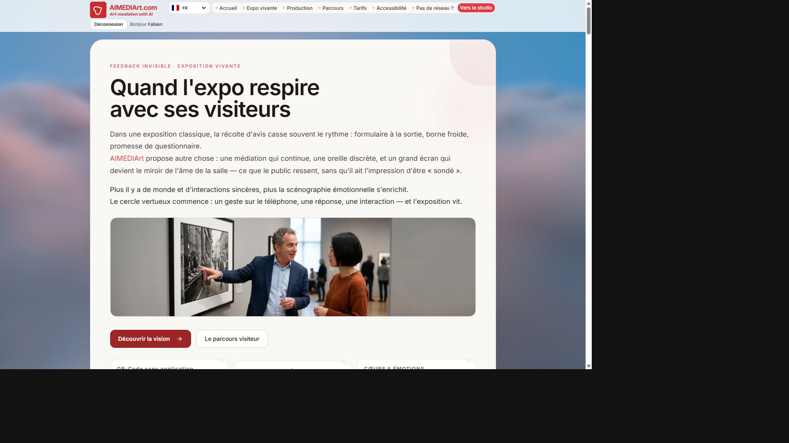
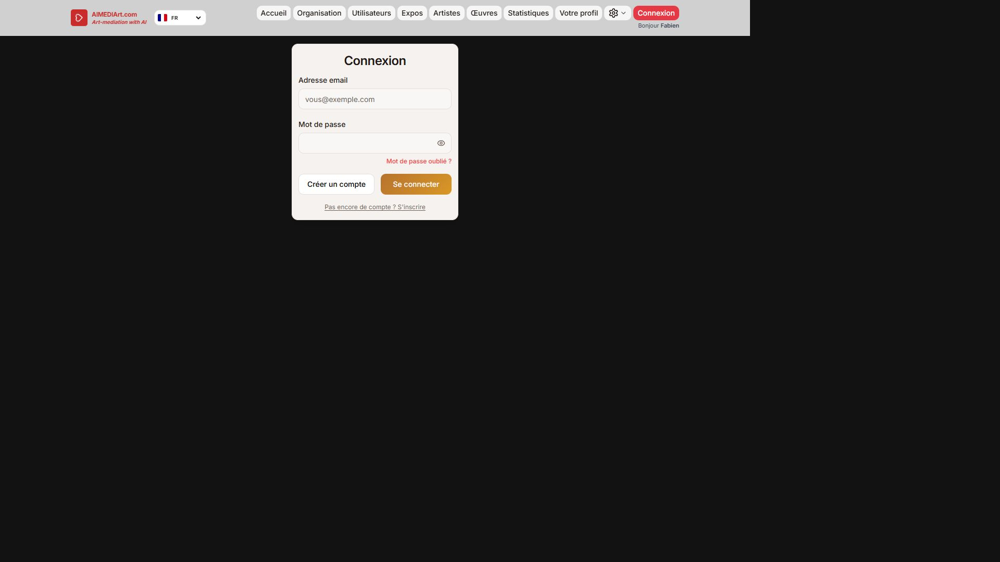
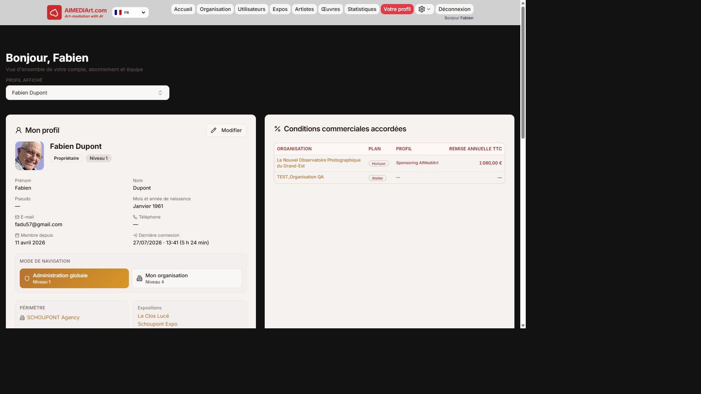
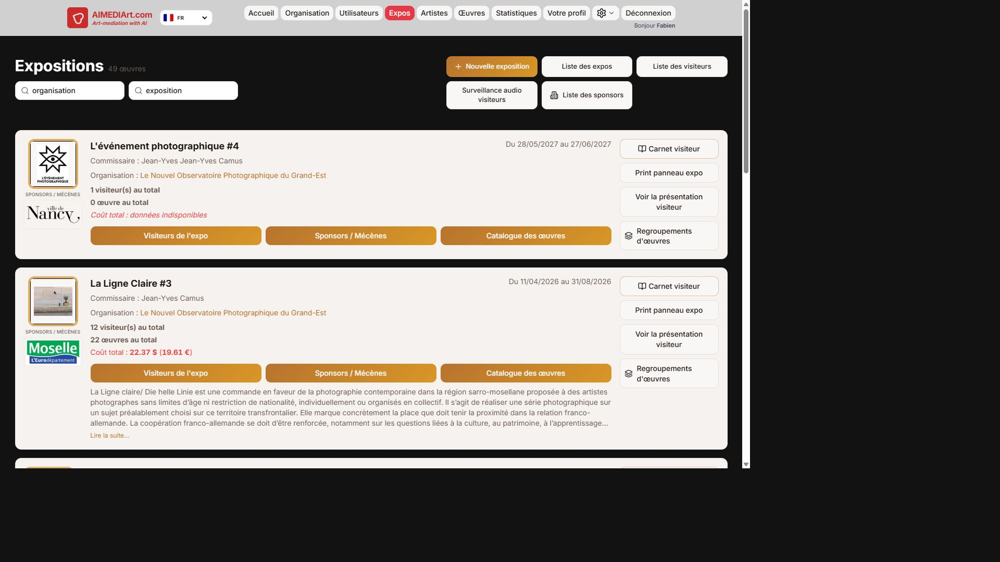
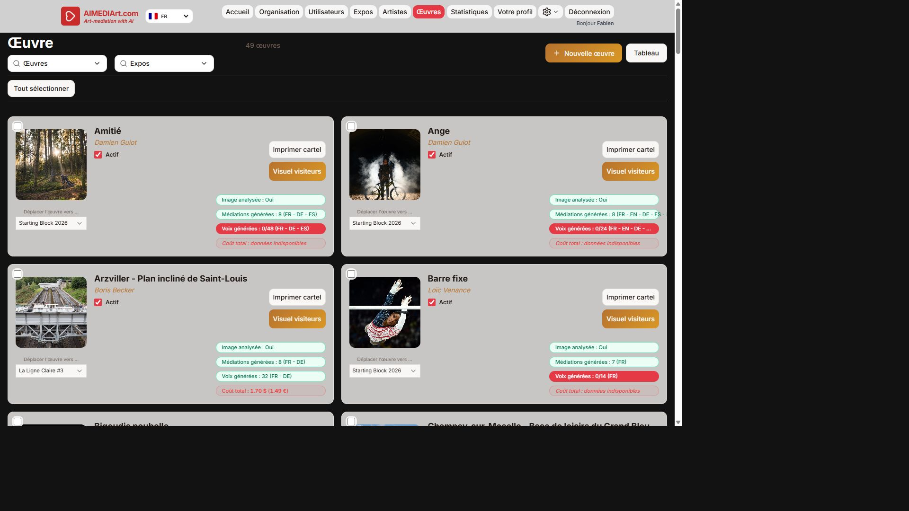
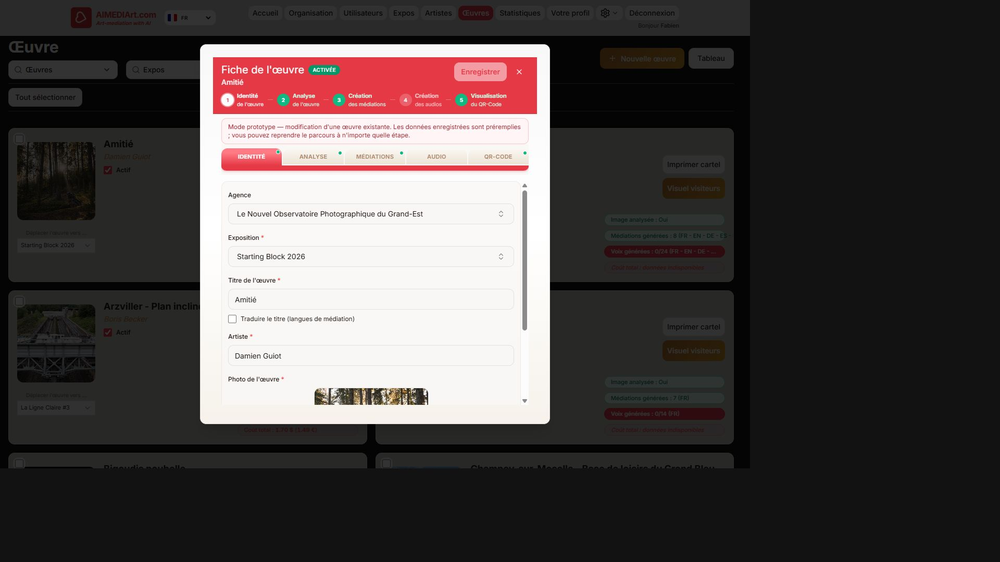
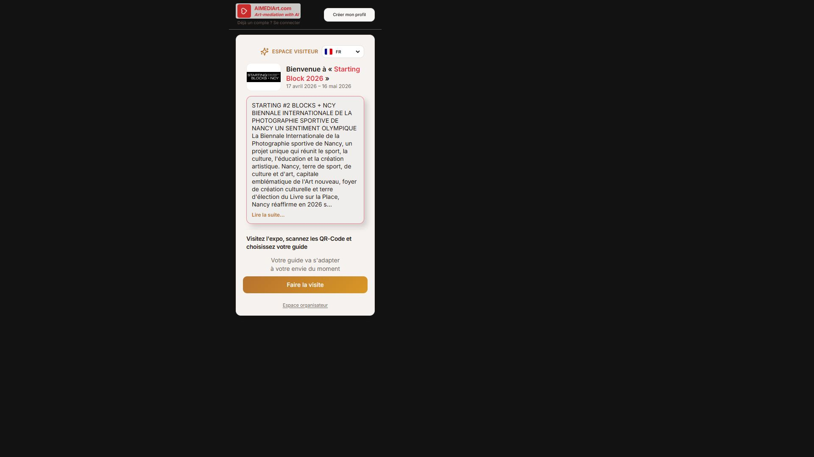
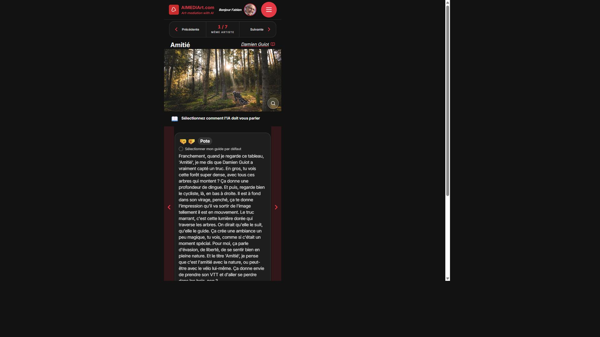
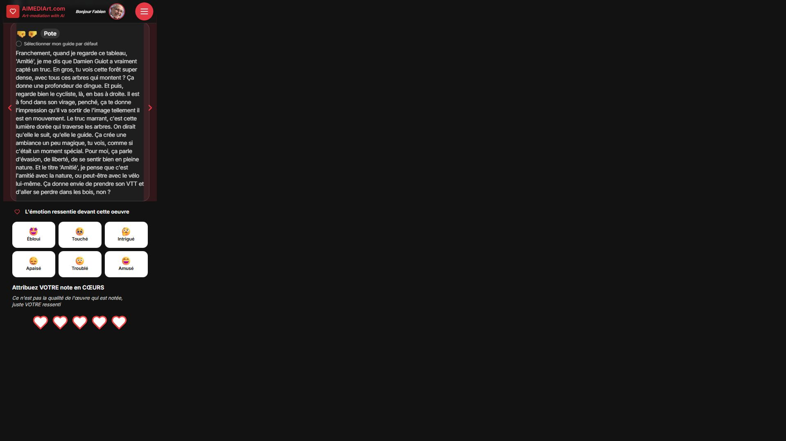
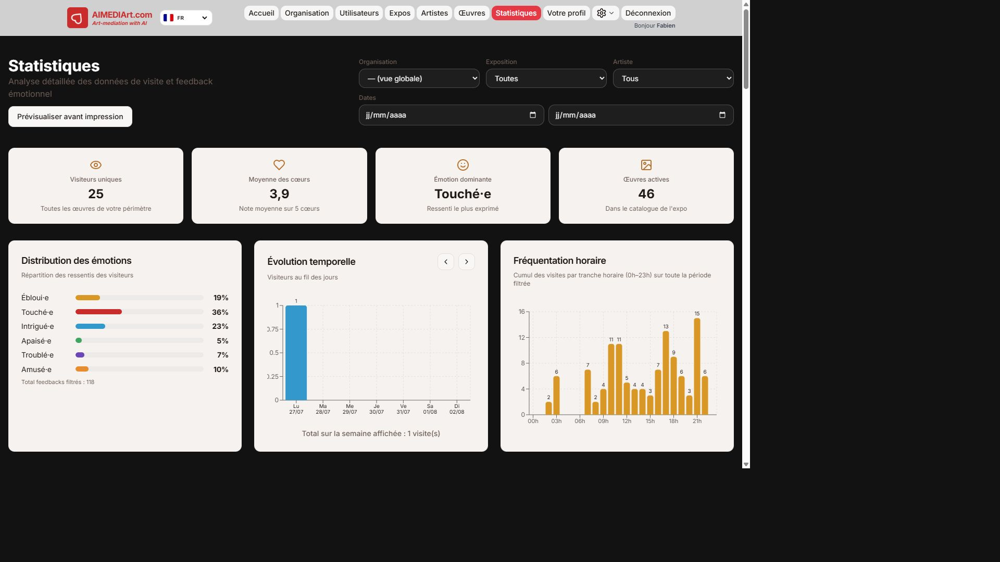

1. Vitrine organisateur
Page publique /organisation — argumentaire produit, parcours, tarifs. Point d’entrée commercial.

2. Connexion studio
Route /login. Création de compte via « Créer un compte » / inscription.

3. Votre profil (hub)
Après connexion : /dashboard. Compte, mode de navigation (admin global / organisation), périmètre expo, équipe.

4. Expositions
/expos — créer une expo, accéder visiteurs, sponsors, catalogue, présentation visitor.

5. Catalogue des œuvres
/catalogue — cœur opérationnel : création, badges IA, impression cartel, aperçu visiteur.

6. Fiche œuvre (workflow IA)
Modal ouvert depuis le catalogue. Chaîne : Identité → Analyse → Médiations → Audio → QR-Code.

- Identité — rattacher expo / artiste / photo.
- Analyse — lancer l’analyse image IA.
- Médiations — générer personas × langues, puis valider humainement.
- Audio — générer les voix.
- QR-Code — générer, tester, imprimer le cartel.
7. Parcours visiteur (salle)
Entrée QR → gate expo → page œuvre (personas, émotions, cœurs). Sans application à installer.



8. Statistiques
/statistiques — KPIs, distribution émotionnelle, fréquentation. Idéal pour comités et financeurs.

9. Checklist jour J & messages marketing
| Avant ouverture | Pendant / après |
|---|---|
|
Œuvres Actives + bonne expo Médiations validées Voix clés générées Cartels imprimés + QR testés Test téléphone hors Wi‑Fi orga |
Suivre /statistiques Surveillance audio si équipé Ajuster une médiation si besoin Export PDF partenaires Relancer via carnet / e-mail |
- « Une photo → analyse → 8 personas × langues → audio → cartel QR. »
- « Le visiteur ne remplit pas un formulaire : il dialogue et vote en cœurs. »
- « Vous gardez la main : l’IA accélère, l’humain valide. »
- « Les stats émotionnelles partent en PDF pour vos financeurs. »